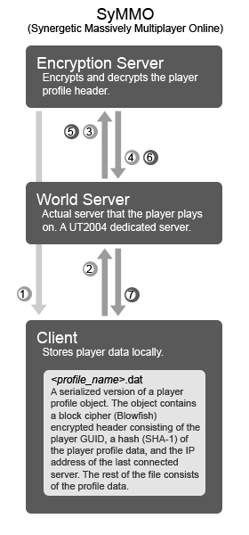

Jimboh/MMO Idea
So, an MMO is short for Massively Multiplayer Online. As the name suggests, such a game would involve hundreds (perhaps thousands) of players in the same world. It also involves persistence of items and players. So players keep their items/skills even after they've logged off the game.
Due to UT200x's player cap of about 32 (or mabye 64) players, it is obvious that true MMO's are not possible. Therefore, I've devised a system to go around this limitation of the UT engine. The player can choose to "teleport" into a "world" (which is a server). Each world would therefore also have exits which then connects the players to other "worlds". Persistence is actually saved on the client. Manual profile modification is prevented by an encrypted hash mechanism.
SyMMO Framework
Overview:

Login
1) The client queries the encryption server for a list of "trusted" servers. This is handled through HTTP protocol, wherein the coordinates transmitted is in XML format.
2) Client attempts to connect to the world server. The encrypted header is received through the Options parameter of GameInfo.PreLogin() event.
3/4) The header is then sent through an HTTP request to the encryption server for decryption. The resulting XML page contains all the decrypted fields. If encryption server does not respond after 2 more requests, player is prompted to create a new profile.
Saving
5/6) When the player chooses to save game, the world server first recalculates the SHA-1 hashcode for the new profile. It then sends an HTTP request to the encryption server to encrypt a new header. The resulting binary file is the result page. If encryption server does not respond after 2 more tries, the world server prompts the client to "try again at a later time (Sucks for you)".
7) Header is now saved on the client along with profile information (assuming that player profile is always synchronized with that of the world server's). Old profile data is overridden.
Progress
2/08/2006
Scrapped proprietary network messaging protocol. SyMMO will be built ontop of El_Murte's LibHTTP library. Starting work on SHA-1 hasher.
2/04/2006
Finished rudimentary network messaging protocol. Basically sits ontop of TCP and makes sure the data isn't corrupt.
1/31/2006
Started work on initial logging in with master server. Acquired a small MySQL server to play with. Current Master server implementation still deciding (ie. PHP/ASP/Perl-CGI/Java). discuss?
Discussion
Comments? Ideas? Opinions?
MythOpus: Have you managed to get proper profile data from the slave servers? I have a concept much like the MMO ones however mine won't be exactly an MMO.
Sweavo: the master server is going to be pretty busy if it's needed every time any player anywhere moves server. Might it be better to have a more peer-based approach where the server the player is joining contacts the server the player is leaving for the player data? Servers would only accept player data from trusted peers. The master server would contain the list of trusted servers, and maybe it would store the player data when the player quit (rather than moving from one server to next). Also, if the master server stored the id of the server that was quit, you could force the player to rejoin the same server on re-connection.
Jimboh: Thanks Sweavo, thats a really good idea. I'll look into it  @MythOpus, no, I'm still working out on the protocol to use between the servers (since theres the issue of security and whatnot).
@MythOpus, no, I'm still working out on the protocol to use between the servers (since theres the issue of security and whatnot).